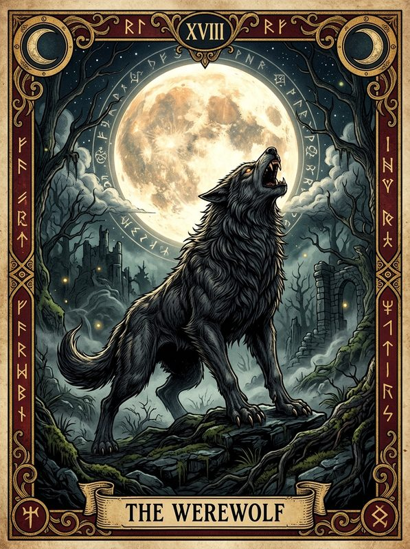
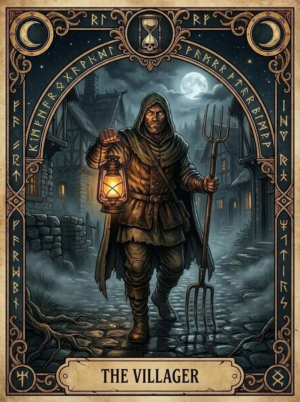

Inganni e misteri al calar della notte: gioca con un solo smartphone oppure ognuno dal proprio dispositivo!
Scegli il numero di lupi e attiva i ruoli speciali. I restanti saranno pacifici contadini!
Seleziona le figure oscure e mistiche da distribuire segretamente nel villaggio.
Assicurati che nessuno stia sbirciando prima di rivelare la tua identità segreta!

Descrizione del ruolo...
Stato vitale degli abitanti durante il corso della partita.
Distribuzione segreta dei ruoli sui singoli smartphone senza server centrali.
In attesa che il Master configuri e distribuisca i ruoli...
Assicurati che nessuno stia sbirciando il tuo schermo prima di rivelare la carta!

Descrizione del ruolo...
Hai memorizzato la tua identità segreta. Il villaggio scivola nelle tenebre: posa il dispositivo sul tavolo a schermo spento e segui attentamente la voce del Narratore.
Verifica che tutti gli abitanti abbiano aperto il loro smartphone e confermato il loro ruolo prima di iniziare la notte.
Descrizione...